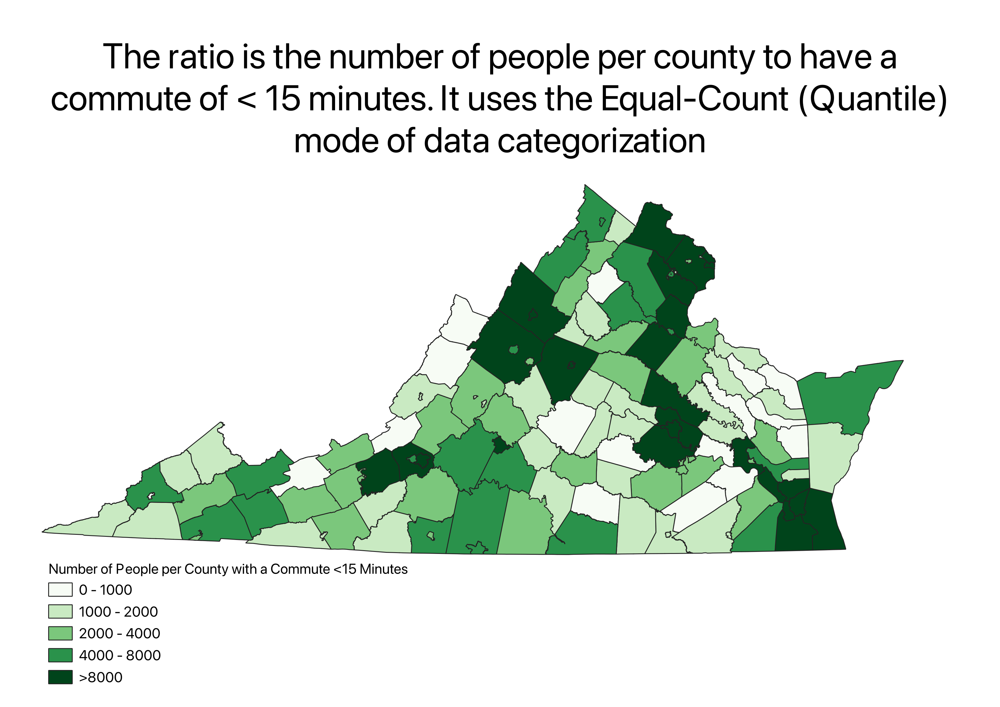
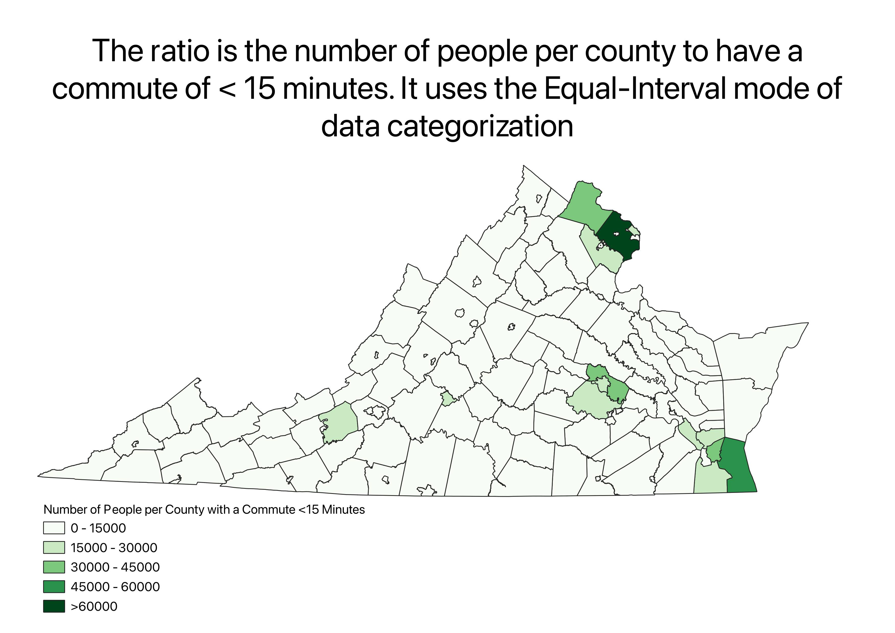
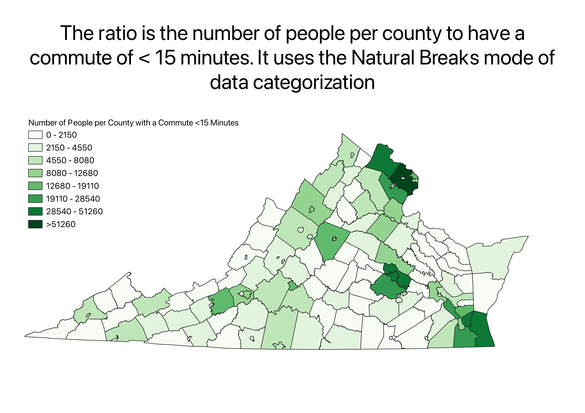

Homework 6pt2: Census data ratios and categories
Prithvi Adiga
I used the data from part 1 which contained commute data for every county in Virginia in 3 columns: total number of commuters, number of commuters who commute
less than 15 minutes, and a custom value I created myself, the percent of commuters who commute less than 15 minutes. Since I'd used the percentage value for my
last map, for this map I used population of people who commuted less than 15 minutes as my ratio and then I projected it with three different modes of data visualization:
- Equal Count (Quantiles)
- Equal Interval
- Natural Breaks
Maps:
This map uses the Equal-Count (quantiles) mode of data classification.

This map uses the Equal-Interval mode of data classification.

This map uses the Natural Breaks mode of data classification.
